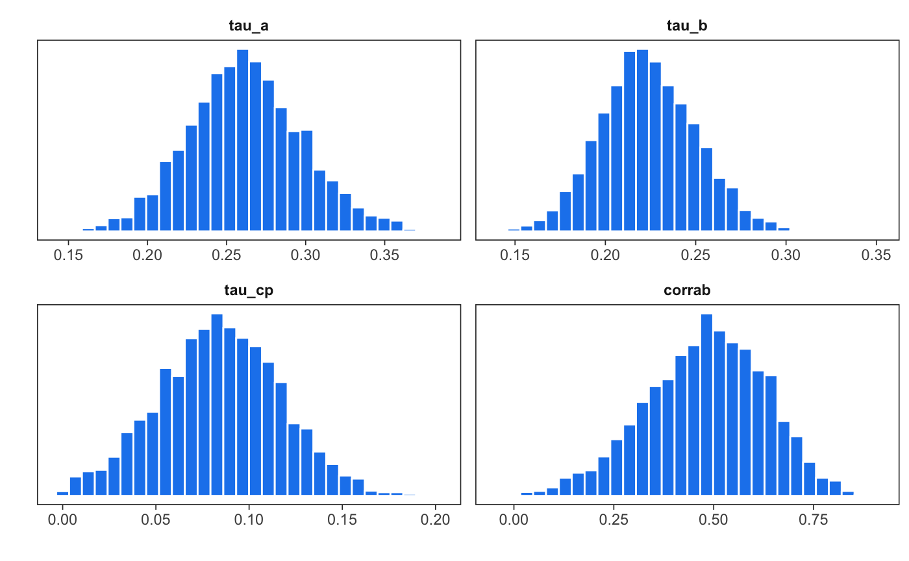
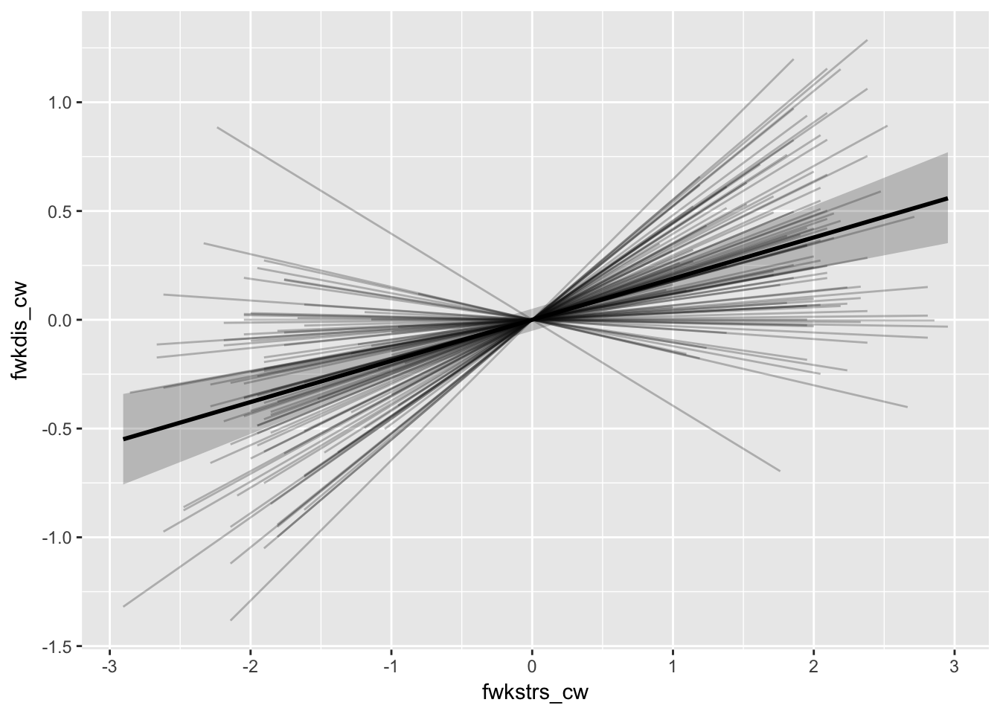
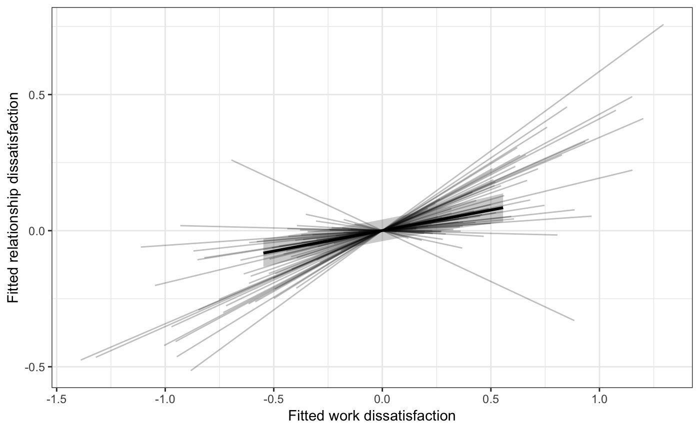
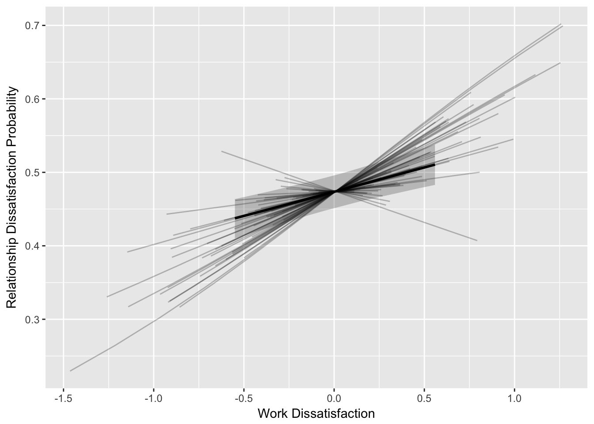
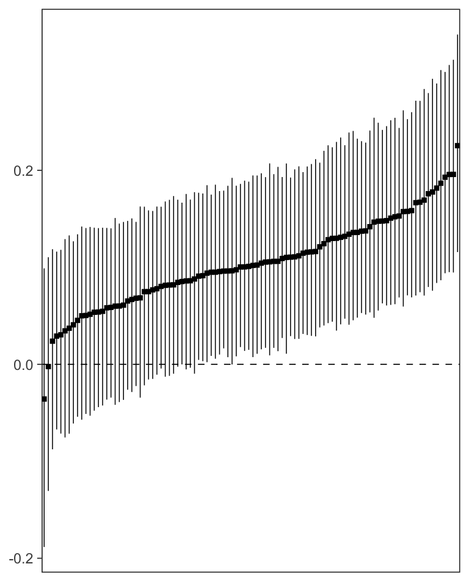

bmlm: Tutorial with Relationship Satisfaction Data
Matti Vuorre
2019-02-21
Source:vignettes/bmlm-blch9/bmlm-blch9.Rmd
bmlm-blch9.RmdIntroduction
bmlm is an R package that allows easy estimation of multilevel mediation models. bmlm uses the RStan interface to the powerful Stan Bayesian inference engine (Stan Development Team, 2016). Users can estimate, summarize and plot a multilevel mediation model easily with the convenient functions provided with bmlm. This document explains how to install bmlm and its required components, and then walks through an example of how to use it in practice.
Installing bmlm
Please ensure you have the latest version of R installed (R Core Team, 2016). The latest stable version of bmlm is available on CRAN:
Development version.
The latest development version of bmlm is available on GitHub. The development version sometimes has features that have not yet made it to the package on CRAN. To install R packages from GitHub, please install the devtools package first, as shown by the first line below. Then install bmlm using devtools:
install.packages("devtools")
# Install from GitHub using the devtools package
devtools::install_github("mvuorre/bmlm", args = "--preclean")If something goes wrong during the installation process, you will receive a notice usually asking you to install additional packages. If you are unable to resolve the problems, please open an issue on GitHub.
Example
After installing the required software, load the bmlm package to your current R workspace:
bmlm contains an example data set from Intensive Longitudinal Methods: An Introduction to Diary and Experience Sampling Research (Bolger & Laurenceau, 2013). We’ll use this data set in this example, and first load it into the workspace from the package, and display what the data looks like:
## id time fwkstrs fwkdis freldis x m y
## 1 101 1 3 5.590119 3.034483 0.3333333 0.9828781 -1.4420726
## 2 101 2 3 5.535224 4.620690 0.3333333 0.9279833 0.1441343
## 3 101 3 3 3.888381 2.850575 0.3333333 -0.7188603 -1.6259807
## 4 101 4 4 5.352242 6.398467 1.3333333 0.7450007 1.9219121
## 5 101 5 1 4.483074 2.544061 -1.6666667 -0.1241668 -1.9324941
## 6 101 6 2 3.339433 5.164751 -0.6666667 -1.2678081 0.6881956Data preprocessing
The goal of multilevel mediation modeling, in this case, is to assess the within-person relationships between X, M and Y. To this end, it is important to isolate the within- and between-person components of X, M, and Y. The isolate() function in bmlm allows the user to create within- and between-person centered values of variables. The example dataset BLch9 already contains subject-mean deviated components, but here we illustrate how to obtain these using the isolate() function. The key inputs to this function are d, a data frame; by a column of values that identifies individuals; and value, which variable(s) should be transformed.
## id time fwkstrs fwkdis freldis x m y
## 1 101 1 3 5.590119 3.034483 0.3333333 0.9828781 -1.4420726
## 2 101 2 3 5.535224 4.620690 0.3333333 0.9279833 0.1441343
## 3 101 3 3 3.888381 2.850575 0.3333333 -0.7188603 -1.6259807
## 4 101 4 4 5.352242 6.398467 1.3333333 0.7450007 1.9219121
## 5 101 5 1 4.483074 2.544061 -1.6666667 -0.1241668 -1.9324941
## 6 101 6 2 3.339433 5.164751 -0.6666667 -1.2678081 0.6881956
## fwkstrs_cw fwkdis_cw freldis_cw
## 1 0.3333333 0.9828781 -1.4420726
## 2 0.3333333 0.9279833 0.1441343
## 3 0.3333333 -0.7188603 -1.6259807
## 4 1.3333333 0.7450007 1.9219121
## 5 -1.6666667 -0.1241668 -1.9324941
## 6 -0.6666667 -1.2678081 0.6881956The ..._cw variables now contain isolated within-person (“subject-mean deviated”) pieces of each variable. We’ll use these for the mediation analysis.
Fit model
To estimate the multilevel mediation model, run mlm() and save its output to an object. Here we’ll call it fit. You can also ask Stan to run multiple MCMC chains in parallel (if supported by your computer).
fit <- mlm(d = BLch9,
id = "id",
x = "fwkstrs_cw",
m = "fwkdis_cw",
y = "freldis_cw",
iter = 2000,
cores = 4)The main arguments to mlm() are d (a data.frame), which here was set to BLch9. The user also needs to specify which columns contain the variables needed for the mediation model, unless they are already named id, x, m, and y:
-
idis a column of participant IDs in the provideddata.frame. -
xis the manipulated variable. -
mis the mediator variable. -
yis the outcome variable.
There are various additional arguments to the above command. Most notably, the iter = 2000 specified the number of samples to draw from the posterior distribution, for each MCMC chain. The default is to use 4 chains. Further, Stan’s MCMC algorithms use a portion of the samples as warmup to adjust various underlying parameters. The default of one half was used for this example.
Stan’s MCMC procedures are very efficient, but estimating the model with large datasets will take a while. This example takes about 30 seconds on a desktop Mac (8GB RAM, 4ghz Intel i7).
Summarize fitted model
After the samples have been obtained, bmlm’s helper functions can be used to obtain summaries of the results. For more options, all rstan methods are also available.
Numerical summary
A numerical summary of the “fixed” effects can be obtained by mlm_summary(fit):
## Parameter Mean SE Median 2.5% 97.5% n_eff Rhat
## 1 a 0.19 0.03 0.19 0.12 0.26 2416 1
## 2 b 0.15 0.03 0.15 0.09 0.21 2577 1
## 3 cp 0.10 0.02 0.10 0.06 0.15 3864 1
## 4 me 0.06 0.01 0.06 0.03 0.09 1720 1
## 5 c 0.16 0.03 0.16 0.11 0.21 3330 1
## 6 pme 0.36 0.08 0.35 0.21 0.53 2187 1mlm_summary() returns, for each parameter, the following information:
- Posterior Mean: This can be used as a point estimate of parameter
- SE: The standard deviation of the marginal posterior distribution of plausible parameter values.
- Posterior Median: If the posterior distribution is skewed, the median might be used as a more accurate point estimate.
- Lower and upper limits to Credible Intervals. The CIs summarize the central X% mass of the marginal posterior distribution, where X% is defined by a
levelargument tomlm_summary(). The default “confidence level” is 0.95, but users may supply any value they desire. - n_eff and Rhat are diagnostic values used to diagnose the performance of the underlying Stan MCMC procedures. see
?mlmor?stanfor details.
Graphical summaries
bmlm provides functions for graphical summaries of the estimated model. The first draws a path diagram of the mediation model, with point estimates of the relevant average-level parameters, and their associated credible intervals (as defined by level). By default, the plot also shows the standard deviations (SD) of the Gaussian distributions of the subject-level varying effects, and their associated CIs. You can turn off the “random” effects by calling the function with random = FALSE.
mlm_path_plot(fit, level = .95, text = T,
xlab = "Work\nstressors",
mlab = "Work\ndissatisfaction",
ylab = "Relationship\ndissatisfaction", digits = 2)Path diagram of the average level mediation model, with numerical summaries of the relevant parameters.
This figure offers a quick view of the estimated model: All paths (a, b, c') are positive with fairly narrow credible intervals. However, the SD parameters indicate considerable heterogeneity in the effects.
We called the function with the argument text = T, showing additional transformed parameters in the upper left corner: me is the average mediated effect, c is the total effect, and pme is the proportion mediated effect. cov(a, b) is the covariance of the varying a and b parameters. To disable showing the additional parameters, call the function with text = F.
For a more detailed investigation of the model’s parameters, bmlm offers three methods for plotting the samples from each parameter’s posterior distribution. These are obtained by a call to mlm_pars_plot(type = X) where X can be either hist (or left blank) for histograms, coef for a coefficient plot with point estimates and Credible Intervals, or “violin” for a violin plot. With coefficient plots, the user may specify level to set the “confidence level”, which is represented by the length of the lines surrounding each point estimate.
mlm_pars_plot(fit, pars = "me")
mlm_pars_plot(fit, type = "coef", level = .99)
mlm_pars_plot(fit, type = "violin", color = "dodgerblue2")Figure 2. Coefficient plots.
The user can also specify the parameters to show on the plot, as illustrated in the next histograms:
Histograms for a selection of parameters.
The histograms are useful for visually assessing the shape of each marginal posterior distribution.
More complex plots are also possible:
mlm_pars_plot(fit, type = "hist", pars = c(
"tau_cp", "Omega[1,2]", "Omega[1,3]",
"Omega[2,1]", "tau_b", "Omega[2,3]",
"Omega[3,1]", "Omega[3,2]", "tau_a"),
nrow = 3, color = "skyblue4")Varying effects standard deviations (tau) and correlations (Omega).
The first three positions (1: path c', 2: path b, 3: path a) of the varying effects SDs (\(\tau\)) and correlations (\(\Omega\)) are plotted as histograms. Each histogram represents the MCMC samples of plausible parameter values from the corresponding posterior distribution. These parameters are also found with their names in the posterior samples matrix:

Plotting fitted values
Users can plot fitted values of the a and b paths, at the population (fixed) and subject (random) levels, using mlm_spaghetti_plot(). This function requires the user to input a fitted multilevel mediation model object (mod), the data used to fit the model (d), and the names of x, m, and y variables that were used from the data.
ps now contains a list of two plot objects. The first plot contains the fitted values of the X -> M regression (path a). By default, both the population- and subject-level fitted values are included in the plot (see ?mlm_spaghetti_plot for how to modify this behavior), the former is shown as a thicker line with a 95% (this percentage can be modified: ?mlm_spaghetti_plot) Credibility Ribbon around it.

Both plots inside the list ps can be arranged side by side using the gridExtra package, and can be modified with the usual ggplot2 functions:
library(ggplot2)
library(gridExtra)
grid.arrange(
ps[[1]] + labs(title="Path a (X -> M)"),
ps[[2]] + labs(title="Path b (M -> Y)"),
nrow=1)
Another example:
ps[[2]] +
labs(x="Fitted work dissatisfaction",
y="Fitted relationship dissatisfaction") +
theme_bw()
Binary outcome variable
Users can also estimate the multilevel mediation model when the outcome is binary (coded as 0s and 1s). In this case, the outcomes are modelled as bernoulli distributed with a logistic link to the probability parameter of the bernoulli distribution (i.e. the b path is a multilevel logistic regression).
To illustrate, we re-estimate the model using a within person median split Y value as the binary outcome.
library(dplyr)
BLch9_biny <- group_by(BLch9, id) %>%
select(id, fwkstrs_cw, fwkdis_cw, freldis_cw) %>%
mutate(biny = as.integer(freldis_cw > quantile(freldis_cw, .5))) %>%
ungroup()
head(BLch9_biny)## # A tibble: 6 x 5
## id fwkstrs_cw fwkdis_cw freldis_cw biny
## <int> <dbl> <dbl> <dbl> <int>
## 1 101 0.333 0.983 -1.44 0
## 2 101 0.333 0.928 0.144 0
## 3 101 0.333 -0.719 -1.63 0
## 4 101 1.33 0.745 1.92 1
## 5 101 -1.67 -0.124 -1.93 0
## 6 101 -0.667 -1.27 0.688 1fit_biny <- mlm(d = BLch9_biny,
id = "id",
x = "fwkstrs_cw",
m = "fwkdis_cw",
y = "biny", binary_y = TRUE,
cores=4)mlm_spaghetti_plot() can also plot fitted values for models with a binary Y variable.
ps2 <- mlm_spaghetti_plot(fit_biny, BLch9_biny,
id="id", x="fwkstrs_cw", m="fwkdis_cw", y="biny",
binary_y=T)The second plot in the list ps2 contains the fitted values of the b path:

Tips and tricks
Users can investigate person-specific effects by modifying the input to the functions above.
Person-specific effects
It is also possible to investigate person-specific parameters. These exist with the same name as the average-level parameters, but have “u_” appended to them.
## Parameter Mean SE Median 2.5% 97.5% n_eff Rhat
## 1 u_c[1] 0.12 0.08 0.11 -0.03 0.29 4248 1
## 2 u_c[2] 0.10 0.09 0.10 -0.07 0.28 4674 1
## 3 u_c[3] 0.11 0.08 0.10 -0.05 0.28 2665 1
## 4 u_c[4] 0.39 0.13 0.38 0.17 0.66 2946 1
## 5 u_c[5] 0.09 0.10 0.10 -0.11 0.28 3243 1
## 6 u_c[6] 0.08 0.08 0.08 -0.08 0.25 4016 1Participant-specific c’ path values with 80% Credible Intervals.
Further information
The functions contained in bmlm have various options available for the user. Inspect these options by looking at the functions’ help pages:
Users can also input any valid stan() arguments to mlm(); see ?stan for details. The fitted object from mlm() is a valid Stanfit object, so all Stanfit methods are available as well. Functions in the recent bayesplot package (Gabry, 2016) are supported as well, because the returned models are Stanfit objects. For example, it is important to assess the performance of Stan’s MCMC algorithms after estimating a model by inspecting traceplots for convergence problems:

Further modification of the model is possible through modifying the Stan code underlying mlm().
Citation
If you use this software, please cite it:
##
## To cite package bmlm in publications, please use:
##
## Vuorre, M., (2017). bmlm: Bayesian Multilevel Mediation. R
## package version 1.3.4. https://cran.r-project.org/package=bmlm
##
## A BibTeX entry for LaTeX users is
##
## @Manual{,
## title = {bmlm: Bayesian Multilevel Mediation},
## author = {Matti Vuorre},
## year = {2017},
## url = {https://cran.r-project.org/package=bmlm},
## }References
Bolger, N., & Laurenceau, J.-P. (2013). Intensive longitudinal methods: An introduction to diary and experience sampling research. Guilford Press. Retrieved from http://www.intensivelongitudinal.com/
Gabry, J. (2016). Bayesplot: Plotting for bayesian models. Retrieved from https://CRAN.R-project.org/package=bayesplot
R Core Team. (2016). R: A language and environment for statistical computing. Vienna, Austria: R Foundation for Statistical Computing. Retrieved from https://www.R-project.org/
Stan Development Team. (2016). Stan: A c++ library for probability and sampling, version 2.12.0. Retrieved from http://mc-stan.org/